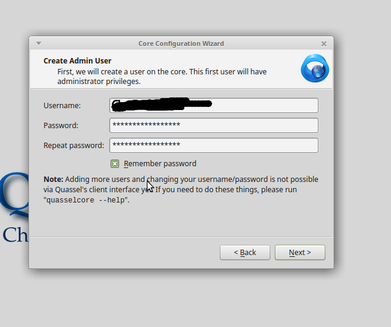
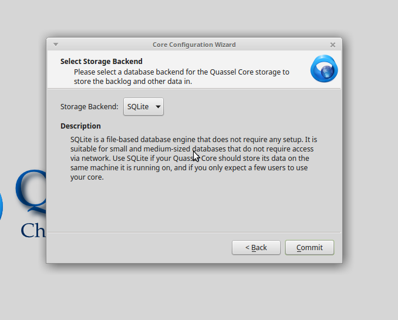

Quassel IRC
Created at 2016-07-19 Updated at 2016-07-25
Quassel IRC is a modern, cross platform, distrubuted IRC client. It requires users to set up both the server (QuasselreCore) and a client. The client attaches to the core, which saves all the IRC info. You can create new users that have seperate profiles and channels from each other, allowing multiple people to use the same core without messing up each others settings.
I will assume you have an ubuntu 14.04 Digital Ocean droplet to install your Quasselcore. When we install, we will be using the SQlite database so that we can use the manaers.py script later to add and manage multiple users.
SSH into your server.
Add repository
|
|
Check that Quasselcore is running (I’m using sudo to display the process name)
Output should be almost identical to:
On client computer, add repo:
|
|
Connect your Quassel Client to your server and follow the setup wizard.
Create Admin User:

Use the default sqlite database:

Accept the self-signed certificate:
Add core accounts:

Setup your networks:
Now we will configure Quassel to add users. We cannot do this in the gui, we must do it as root in the core.
First, logout of Quassel on your devices (just to play it safe so we don’t have to do an entire reinstallation).
In your VPS, go to /var/lib/quassel/
Copy the manageusers.py file from this GitHub repo
Run the script.
Open up a new instance of Quasselclient, add the server and user information, and set it up just like before.
Boom, you now have a persistent IRC connection!
NOTE:
If your SQlite database gets too big for your liking you can reduce its size using this script or this other script that includes making a backup.
Here is a weekly purge.
Another method, this time running an sqlite command.